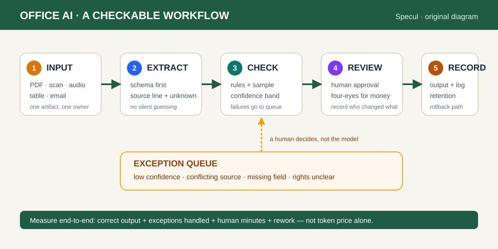

领域深度 · 办公与业务流程Field guide · Work & business workflows
办公与业务流程：把一件活拆成 AI 能接的步骤Office and business workflows: split a job into steps AI can take
你让 AI“帮我处理发票”，它回了一段看起来很顺的文字，但金额、税号、抬头全没核对。办公任务不是更快的聊天框，而是一条能验收的流水线：输入从哪来、谁做哪一步、什么必须人看、出错退给谁。把一件活拆开，AI 才有位置。You ask AI to “handle the invoices” and get a smooth paragraph with unchecked amounts, tax IDs and company names. Office work is not a faster chat box; it is a checkable pipeline: where input comes from, who does which step, what a human must see and where failures go back. Split the job, and AI has a place.
- 先写输入、输出、完成定义和退回条件。Write the input, output, definition of done and return conditions first.
- AI 做草稿和搬运，关键数字和人名必须有人看。Let AI draft and move data; a human checks critical numbers and names.
- 先跑一周真实活，再谈全部门推广。Run one week of real work before rolling it out to a department.
完整版从下面开始；表格是查的时候用，不用背。The full guide starts below. Use the tables for reference; you do not need to memorise them.
假设一个具体活：每天 50 张发票，AI 只做“读出金额、税号、抬头，填进表”，财务抽 10 张复核。先按这条跑一周。Take one concrete job: 50 invoices a day. AI only extracts amount, tax ID and company name into a sheet; finance checks 10. Run that for a week.

1 · 先画流程，再选工具1 · Draw the pipeline before choosing a tool
一张流程卡写清五件事：输入是什么文件 / 音频 / 表格。输出要落到哪个系统、什么字段。谁对结果负责。什么算验收通过。失败或低置信时进哪个队列。写不清这五项，选什么模型都只是把不确定性藏得更深。A one-page pipeline card states five things: what the input is (document, audio, table), where the output lands (system and fields), who owns the result, what counts as acceptance, and which queue receives failures or low-confidence cases. Without these five, any model only hides uncertainty deeper.
先区分「辅助」与「自动」：辅助是给人候选、人做决定。自动是系统直接写入或发出。前者可以先上线，后者必须有权限、审计和回滚。不要用同一个试点同时证明两者。Separate assistance from automation: assistance proposes and a human decides; automation writes or sends directly. Assistance can launch earlier; automation needs permissions, audit and rollback. Do not use one pilot to prove both.
流程图里要标出「人等模型」和「模型等人」的位置。前者是审核，后者是补资料。两种等待的成本和指标完全不同。Mark where a human waits for the model and where the model waits for a human. The first is review; the second is missing input. Their cost and metrics are different.
| 环节Stage | 要写清Must be explicit | 常见失败Common failure |
|---|---|---|
| 输入Input | 文件类型、来源、权限、是否含个人信息File type, source, permission, personal data | 扫描歪斜、缺页、权限不明Skewed scan, missing page, unclear rights |
| 抽取Extract | 字段、类型、必填 / 可选、未知怎么表示Fields, types, required/optional, how unknown is represented | 模型补了不存在的字段The model invents a missing field |
| 检查Check | 规则、抽样比例、置信阈值Rules, sampling rate, confidence threshold | 只查总数，不查逐条来源Only totals checked, not per-row sources |
| 复核Review | 谁有权改、什么必须双人Who may edit, what needs four eyes | 复核人直接点通过Reviewer rubber-stamps |
| 记录Record | 输出、日志、保留期、回滚点Output, log, retention, rollback point | 无法回答「这条是谁改的」Cannot answer who changed this row |
2 · 四类高频任务，先从一类开始2 · Four high-frequency tasks; start with one
文档抽取：扫描件 / PDF → 表格字段。关键不是 OCR 识别率，而是「字段定义、页码与坐标、未知值、复核队列」。同一张发票在不同供应商模板下，字段位置会变。只靠一个通用模型，错误会集中在少数模板上。Document extraction: scan/PDF → table fields. The key is not OCR accuracy but field definitions, page and coordinates, unknown values and a review queue. The same invoice moves fields across supplier templates; a generic model concentrates errors on a minority of templates.
会议整理：录音 → 纪要 / 行动项。先区分「原话、摘要、决定、待办」四种内容。把说话人、时间戳和原句保留下来，才能核对。自动摘要写得再顺，也不能替代对关键决定的确认。Meeting notes: audio → minutes and actions. Separate verbatim speech, summary, decision and action. Keep speaker, timestamp and the original sentence so claims can be checked. A smooth summary does not replace confirmation of key decisions.
表格合并 / 对账：多张表 → 一张主表 + 异常单。先定义主键、重复规则、冲突优先级。不要让模型「看起来差不多就合并」。金额、日期、编号这类字段，规则引擎通常比模型更可靠。Table merge/reconciliation: several tables → one master table plus an exception list. Define the key, duplicate rules and conflict priority first. Do not let a model merge “because it looks similar”. For amounts, dates and IDs, a rule engine is usually more reliable than a model.
文档审阅：长文 → 问题表。要求每条问题带原文位置、修改建议和严重度。没有定位的问题无法复核。合同、合规、人事文件必须由有资质的人做最终判断。Document review: long text → issue table. Every issue needs a source location, suggested change and severity. An issue without a location cannot be checked. Contracts, compliance and HR documents need a qualified final reviewer.
3 · 结构化输出：让「不知道」有地方放3 · Structured output: give “unknown” a place to live
输出 schema 要明确三件事：字段名与类型、必填与可选、未知 / 冲突 / 不适用的表示。只允许「是 / 否」两个值，会把「没找到」逼成猜测。允许 null 并记录原因，才能把错误留在表面。An output schema fixes three things: field names and types, required vs optional, and how unknown, conflicting or not-applicable values are represented. A binary yes/no forces “not found” into a guess; allowing null with a reason keeps the error visible.
每条结果尽量带来源：页码、单元格、时间戳或原文片段。来源不是给人看的装饰，它是复核、纠错和审计的入口。没有来源的字段，应该被视为「候选」而不是「事实」。Each result should carry provenance where possible: page, cell, timestamp or source snippet. Provenance is not decoration; it is the entry point for review, correction and audit. A field without provenance should be treated as a candidate, not a fact.
置信度只能作为分流信号，不能当成正确率。模型说「0.95」不代表 95% 正确。要用固定样本集测出「高置信组 / 低置信组」的真实错误率，再决定阈值。Confidence is a routing signal, not an accuracy guarantee. A model saying “0.95” does not mean 95% correct. Measure the real error rate of high- and low-confidence groups on a fixed sample, then set the threshold.
4 · 人的位置：复核不是点一下「通过」4 · The human role: review is not clicking “approve”
复核界面要让人能在一屏内看到「原文、抽取结果、来源、规则提示、历史修改」。只给一个结果和一个通过按钮，复核会退化成橡皮图章。A review screen should show source, extracted result, provenance, rule warnings and edit history in one view. A result plus an approve button degrades review into a rubber stamp.
按风险分级：低风险字段可以抽样复核。金额、日期、身份、权限、对外承诺必须逐条或双人复核。把「谁有权改、改了什么、为什么改」写进日志，而不是只留最终值。Tier by risk: low-risk fields can be sample-reviewed; amounts, dates, identity, permissions and external commitments need row-by-row or four-eyes review. Log who may edit, what changed and why — not only the final value.
要给复核人「拒绝 / 退回补资料 / 转专家」的出口。只有「通过 / 不通过」会让异常堆积在同一个队列，最后被草率处理。Give reviewers exits: reject, return for missing material, escalate to an expert. Only approve/reject piles exceptions into one queue and invites rushed handling.
5 · 权限与数据：能读文件不等于该读全部文件5 · Permissions and data: access to a file does not mean access to every file
最小权限要落到「这个人 / 这个 Agent / 这个连接器」三张身份上：它能读哪些目录、写哪些系统、调用哪些外部 API、把数据发到哪里。用一个共享管理员账号跑所有流程，等于没有权限边界。Least privilege applies to three identities: the person, the agent and the connector. Which folders can it read, which systems can it write, which external APIs can it call, where can data go? Running every workflow under one shared admin account means there is no boundary.
数据流要画出来：输入从哪来、经过哪个模型 / 连接器、日志落在哪、保留多久、谁能导出、删除怎么验证。只用「本地部署」四个字回答不了这些问题——本地也可能有外发 API、遥测和备份。Draw the data flow: where input comes from, which model or connector it passes, where logs land, how long they stay, who can export and how deletion is verified. “Local deployment” alone does not answer these; local systems can still call external APIs, send telemetry or keep backups.
办公场景最容易忽略的是「上下文里的其他人」：邮件签名、会议录音、表格批注、共享盘路径都可能含个人信息。把输入分类（公开 / 内部 / 机密 / 个人数据），再决定能不能进外部模型。The most missed office context is other people: email signatures, meeting audio, spreadsheet comments and shared-drive paths can contain personal data. Classify input (public/internal/confidential/personal) before deciding whether it may enter an external model.
6 · 成本：把人工分钟和返工算进去6 · Cost: include human minutes and rework
一次办公任务的总成本至少包括：模型调用、重试、文件存储、许可席位、复核人工分钟、返工与延迟。只比较每百万 token 的价格，会得出「越便宜越划算」的假结论。The total cost of an office task includes model calls, retries, storage, licence seats, review minutes, rework and delay. Comparing only price per million tokens produces a false “cheaper is better” conclusion.
用一个可复算的算式：单件成本 =（调用 + 重试 + 存储 + 许可）/ 成功件数 + 人工复核分钟 × 人工单价 + 返工成本。分母要用「验收通过」的件数，不是「模型返回」的件数。Use a recomputable formula: cost per accepted item = (calls + retries + storage + licences) / accepted items + review minutes × labour rate + rework cost. The denominator counts accepted items, not model responses.
规模化的拐点不是「模型更便宜」，而是「异常率降到复核人力能吸收」。异常率不降，自动化只是把工作从执行移到返工。The scale-up threshold is not a cheaper model; it is an exception rate that review capacity can absorb. If exceptions do not fall, automation moves work from execution to rework.
7 · 验收：先固定样本，再谈上线7 · Acceptance: fix the sample before talking about launch
准备一套 20–30 件的固定样本（真实脱敏或虚构），覆盖常见模板、边界格式和已知异常。先跑人工基线，记录时间、错误类型和返工。再跑 AI 流程，用同一套样本对比。Prepare a fixed set of 20–30 items (real, redacted or fictional) covering common templates, edge formats and known exceptions. Run the human baseline first, recording time, error types and rework; then run the AI pipeline on the same set.
验收指标至少四项：一次通过率、字段级错误率、异常检出率、单件人工分钟。再加两项安全指标：越权访问次数、无法追溯来源的字段数。任何一项没有基线，都不要写「提升」。At least four acceptance metrics: first-pass yield, field-level error rate, exception detection rate and human minutes per item. Add two safety metrics: unauthorised access attempts and fields without provenance. Without a baseline, do not claim an improvement.
上线用「影子运行」：AI 结果先不写入正式系统，与人工结果并行一段时间。差异逐条解释后再切换。切换后保留回滚开关和旧流程，至少一个结算周期。Launch with a shadow run: AI output does not write to the live system at first; run it alongside human output, explain every difference, then switch. Keep a rollback switch and the old process for at least one billing cycle.
8 · 最小落地路径8 · A minimum path to deployment
- 选一类任务、一个输入格式、一个输出系统，不要同时铺开。Pick one task, one input format and one output system; do not launch several at once.
- 写 schema 与异常规则：字段、类型、未知、冲突、来源位置。Write the schema and exception rules: fields, types, unknown, conflict and source location.
- 准备 20–30 件固定样本，先做人工基线。Prepare 20–30 fixed samples and run the human baseline first.
- 搭一条能回放的流程：输入、模型、规则、复核、写入都有日志。Build a replayable pipeline: input, model, rules, review and write all logged.
- 影子运行，逐条解释 AI 与人工的差异。Run in shadow mode and explain every AI-versus-human difference.
- 按风险分级复核，设置拒绝、退回、转专家三个出口。Review by risk tier and provide reject, return-for-input and escalate exits.
- 用固定样本复算成本与异常率，达到阈值再切正式写入。Recalculate cost and exception rate on the fixed sample; switch to live writes only after thresholds are met.
- 变更即回归：模板、模型、规则、权限任一变化，重跑样本。Regression on change: a new template, model, rule or permission triggers the sample again.
来源与延伸阅读Sources and further reading
以下链接用于核对事实、许可证与官方口径。外部页面可能更新；引用时以原文与核验日为准。These links are for checking facts, licences and official scope. External pages may change; cite the original text and check date.
- Microsoft Power Automate documentationMicrosoft Power Automate documentation云端流、桌面流、连接器与治理的官方文档入口；具体许可与区域可用性以官方为准。Official entry for cloud flows, desktop flows, connectors and governance; licences and regional availability remain official.
- NIST AI Risk Management FrameworkNIST AI Risk Management Framework把风险识别、测量、管理写进流程的公开框架；本页只借它的结构，不代表合规认证。A public framework for identifying, measuring and managing risk; this page borrows its structure, not a compliance certificate.
- 学 AI · 工作流编排Learn · Workflow orchestration任务、工具与人工节点的编排概念。Concept page on orchestrating tasks, tools and human steps.
- 学 AI · 把 AI 接入现有办公流程Learn · Bringing AI into an existing workflow从现有流程出发的接入指南。Guide for starting from an existing workflow.
- 工具站 · PDF 转表格流程Tools · PDF-to-table workflow带输入样例与校验步骤的实操页。Worked page with input samples and checks.
- 工具站 · 会议纪要流程Tools · Meeting notes workflow录音转纪要、行动项与核对步骤。Audio to notes, actions and checks.
- 工具站 · 多表合并Tools · Table merge主键、重复与冲突处理的操作页。Keys, duplicates and conflicts in practice.
- 工具站 · 文档审阅Tools · Document review版本差异与问题表的操作页。Version differences and an issue table.
- AI 导航 · 办公应用类目AI Directory · Office apps办公与垂直应用的站外 AI 网站目录，不是本站评测。AI Directory of office and vertical apps; not a Specul review.
下一步Next
- 回到“用 AI 处理办公任务”路线Back to the office route
- 下一步：把重复步骤交给智能体Next: hand repeatable steps to an agent
- 看其他 15 条主题路线Browse the other 15 topic routes
如果你照着做时卡住了，先回到对应主题路线，不要从头重读。If you get stuck while following it, go back to the matching route instead of rereading the whole guide.
← 回到首页← Back to home 发现错误？提交纠错Spot an error? Send a correction